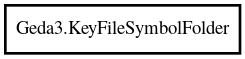

KeyFileSymbolFolder
Object Hierarchy:

Description:
public class KeyFileSymbolFolder
A symbol folder inside a symbol library
Content:
Properties:
- public string id { get; }
Create a new symbol library based off a key file
- public File file { get; }
Create a new symbol library based off a key file
- public string key { get; }
Create a new symbol library based off a key file
- public FileMonitor? monitor { get; }
Create a new symbol library based off a key file
Creation methods: